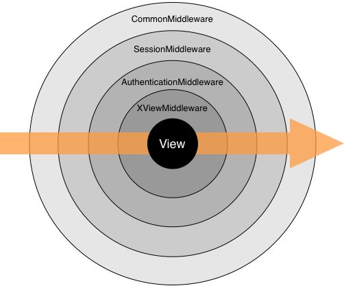

O Middleware é um framework de hook dentro do processamento de requisição/resposta do Django. Ele é um sistema de “plugins” leve, e de baixo nível para alterar globalmente a entrada ou saída do Django.
Cada componente middleware é responsável por fazer alguma função específica. Por exemplo, o Django inclui um componente middleware, XViewMiddleware, que adiciona um cabeçalho HTTP "X-View" a toda resposta para uma requisição HEAD.
Este documento explica como o middleware funciona, como você ativa o middleware, e como escrever seu próprio middleware. O Django vem com alguns middleware embutidos você pode user; eles são documentados na referência de middlewares embutidos.
Para ativar um componente middleware, adicione-o a lista MIDDLEWARE_CLASSES no suas configurações do Django. No MIDDLEWARE_CLASSES, cada componente middleware é representado por uma string: o caminho Python completo com o nome da classe middleware. Por exemplo, o MIDDLEWARE_CLASSES padrão criado pelo django-admin.py startproject:
MIDDLEWARE_CLASSES = (
'django.middleware.common.CommonMiddleware',
'django.contrib.sessions.middleware.SessionMiddleware',
'django.contrib.auth.middleware.AuthenticationMiddleware',
'django.middleware.doc.XViewMiddleware',
)
Durante as fases da requisição (nos middlewares process_request() e process_view()), o Django aplica o middleware na ordem que está definida no MIDDLEWARE_CLASSES, de cima pra baixo. Durante as fases de repostas (nos middlewares process_response() e process_exception()), as classes são aplicada na ordem inversa, de baixo pra cima. Você pode imaginar como se fosse uma cebola: cada classe middleware é uma "camada" que envolve a view:
A instalação do Django não requer qualquer middleware -- e.g., MIDDLEWARE_CLASSES pode ser vazio, se você quiser -- mas é fortemente recomendado que você use pelo menos o CommonMiddleware.
Escrever seu próprio middleware é fácil. Cada componente middleware é uma única classe Python que define um ou mais dos seguintes métodos:
O request é um objeto HttpResponse. Este método é chamado em cada request, antes do Django decidir qual view executar.
O process_request() deve retornar um None ou um objeto HttpResponse. Se ele retornar None, o Django continuará processando a requisição, executando qualquer outro middleware e, então, a view apropriada. Se ele retorna um objeto HttpResponse, o Django não se incomodará em chamar QUALQUER outra requisição, view ou exceção de middleware, ou a view apropriada; ele retornará o HttpResponse. O middleware de resposta é sempre chamado para todas as respostas.
O request é um objeto HttpRequest. O view_func é uma função Python que o Django usa. (É o objeto da função atual, não uma string com o nome da função.) O view_args é uma lista de argumentos posicionais que serão passados para o view, e view_kwargs é um dicionário com argumentos nomeados que serão passados para o view. Nenhum, view_args nem view_kwargs incluem o primeiro argumento do view (request).
O process_view() é chamado logo após o Django chamar o view. Ele deve retornar um None ou um objeto HttpResponse. Se ele retorna None, o Django continuará processando esta requisição, executando qualquer outro middleware process_view() e, então, a view apropriada. Se ele retornar um objeto HttpResponse, o Django não se incomodará em chamar QUALQUER outra requisição, view ou exceção de middleware, ou a view apropriada; Ele retornará o HttpResponse. O middleware é sempre chamado para todas as repostas.
request is an HttpRequest object. response is the SimpleTemplateResponse subclass (e.g. TemplateResponse) object returned by a Django view.
process_template_response() must return an SimpleTemplateResponse (or its subclass) object. It could alter the given response by changing response.template_name and response.context_data, or it could create and return a brand-new SimpleTemplateResponse (or its subclass) instance.
process_template_response() will only be called if the response instance has a render() method, indicating that it is a TemplateResponse.
You don't need to explicitly render responses -- responses will be automatically rendered once all template response middleware has been called.
Middleware are run in reverse order during the response phase, which includes process_template_response.
request is an HttpRequest object. response is the HttpResponse object returned by a Django view.
process_response() must return an HttpResponse object. It could alter the given response, or it could create and return a brand-new HttpResponse.
Diferentemente dos métodos process_request() é process_view(), o método process_response() é sempre chamado, mesmo que os métodos process_request() e process_view() da mesma classe middleware foram pulados por causa de um método de um middleware anterior que retornou um HttpResponse (isto significa que seu método process_response() não pode ivocar a configuração feita em process_request, por exemplo). Além do mais, durante a fase de resposta as classes são aplicadas na ordem reversa, de baixo pra cima. Isto quer dizer que classes definidas no final da lista MIDDLEWARE_CLASSES serão executadas primeiro.
O request é um objeto HttpResponse. O exception é um objeto Exception lançado por uma função view.
O Django chama process_exception() quando uma view lança um exceção. O process_exception() deve retornar um None ou um objeto HttpResponse. Se ele retorna um objeto HttpResponse, a resposta será retornada para o navegador. Por outro lado, o um manipulador de exceção padrão entra em ação.
Novamente, os middlewares são rodados na ordem inversa durante o processo de resposta, que inclui process_exception. Se uma exceção de middleware retorna uma resposta, nenhuma das classes middlewares acima deste middleware serão chamadas.
A maioria das classes middleware não precisam de um inicializador desde que classes middleware são essencialmente marcadores para os métodos process_*. Se você precisar de algum estado global, você pode usar o __ini__ para configurá-lo. Entretanto, mantenha em mente algumas ressalvas:
Algumas vezes é útil determinar, em tempo de execução, se um middleware deve ser usado. Nestes casos, o método __ini__ de seu middleware pode lançar uma exceção django.core.exceptions.MiddlewareNotUsed. O Django irá então remover este middleware de seu processo de middlewares.
Dec 26, 2011